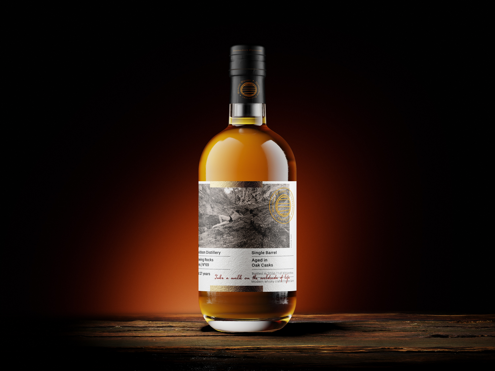
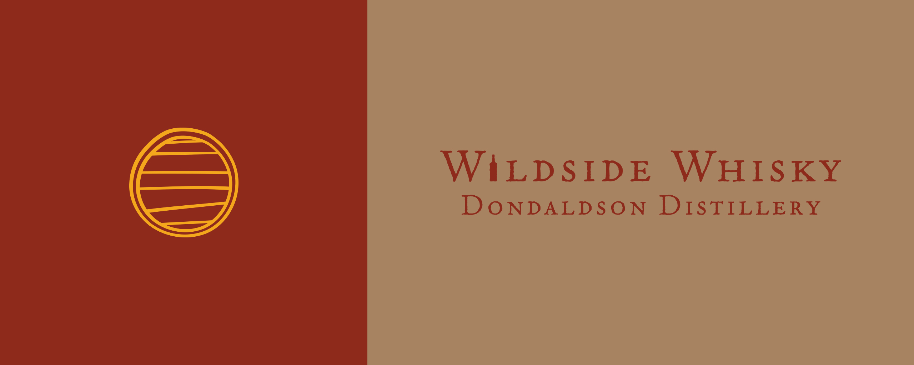
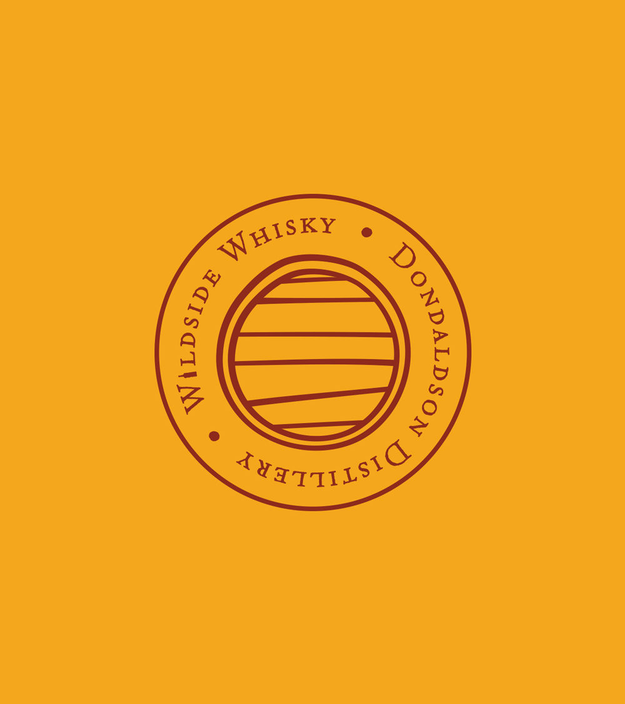
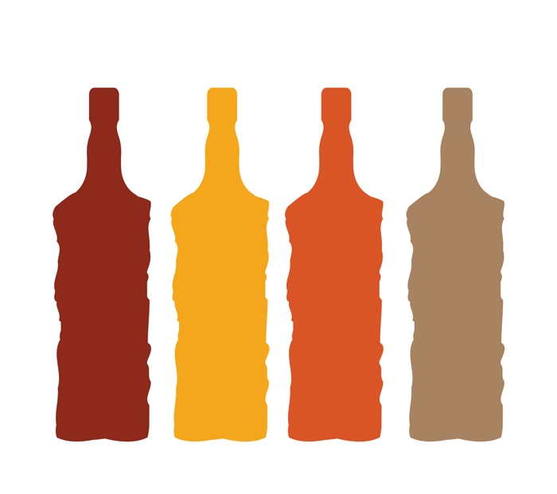
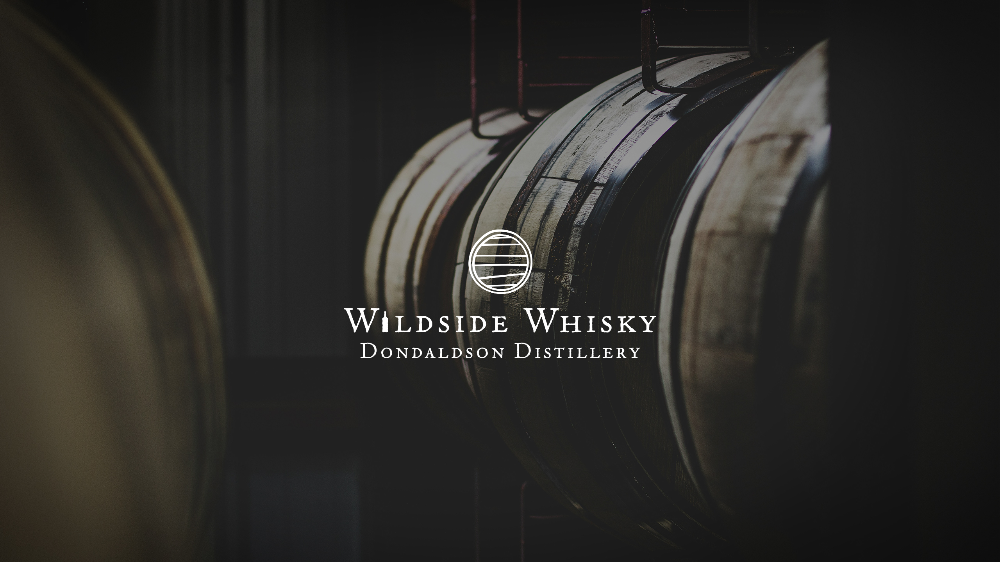

The visual idea
The circular emblem connects the identity to the barrel form, while the quieter typography leaves room for the product imagery. Amber, rust and brown tones carry through the logo treatments and bottle presentation.
Personal projects / Self-initiated brand concept
A whisky identity exploring warm amber colours, restrained typography and a barrel-inspired emblem.

The circular emblem connects the identity to the barrel form, while the quieter typography leaves room for the product imagery. Amber, rust and brown tones carry through the logo treatments and bottle presentation.



